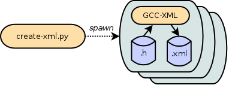
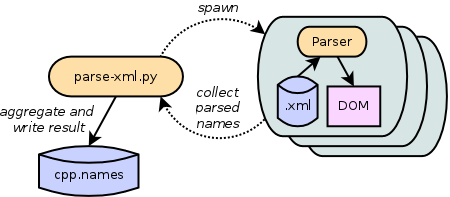

You can analyze the source code to determine wm5 module’s breadth of coverage of the C++ library. This requires GCC-XML application available on your system (APT or YUM users can simply install package gccxml.) You’ll also need MPipe. For the last step of analysis – comparison of the two languages’ APIs – you’ll need to have already installed the Python Wild Magic wrapper, of course.
First, we’ll produce an XML version of the C++ code using create-xml.py. This program runs GCC-XML on all C++ header files in your Wild Magic installation, producing one .xml file for each Wm5*.h file. The program spawns parallel runs of GCC-XML, one process per CPU.
From the top of the source tree, run the following command. It will dump the resulting files in analysis/xml/ directory. (Note the use of output of config.py command as the second argument.)
tool/create-xml.py analysis/xml `./config.py`
Next let’s parse the XML files to obtain a list of all C++ class names. The program parse-xml.py builds DOMs from the XML files and extracts the names of all classes found. The program spawns parallel parsers, one parser process per CPU.
Run the following command, dumping the list of unique class names to file analysis/cpp.names.
tool/parse-xml.py analysis/cpp.names analysis/xml
Now we’re ready to compare the two sets of class names. Program compare.py matches class names in the Wm5 C++ namespace with those in the wm5 Python module, and vice versa. Run the following command to get a summary of the comparison.
tool/compare.py analysis/cpp.names